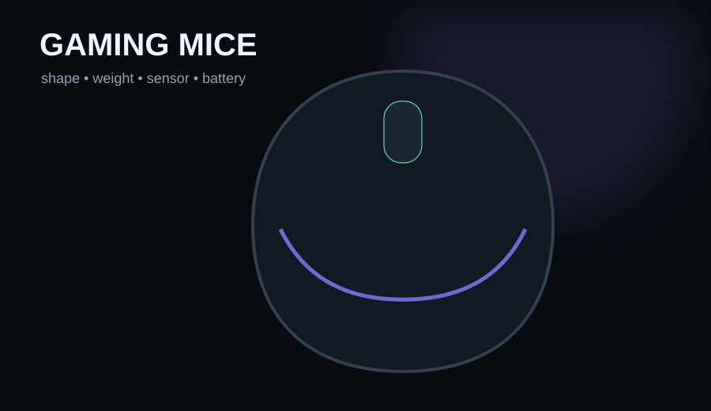

Choose the Razer Viper V4 Pro for competitive low-weight performance, Logitech G502 X for lots of controls and mixed gaming/productivity, and Razer Cobra HyperSpeed when you want a lighter wireless feature set without flagship pricing.
- You are choosing by grip, weight and button needs
- You want a current wireless or wired mouse with proven sensor performance
- You will return a mouse if the shape is wrong for your hand
- You are shopping by maximum DPI alone
- You think 8,000Hz polling is mandatory for every PC
- You are ignoring mouse size and grip style
Key specs & facts
| Razer Viper V4 Pro | 49–50g; up to 8K polling; 50K sensor |
|---|---|
| Logitech G502 X | 89g wired; HERO 25K; 13 programmable controls |
| Razer Cobra HyperSpeed | 62g; 2.4GHz/Bluetooth/wired; 26K sensor |
| Key buying factor | Shape and weight before headline DPI |
There is no single best mouse shape
Hands, grip styles and games differ. A 49g symmetrical esports mouse can feel fantastic in shooters and annoy someone who wants a thumb rest, free-spin wheel and a dozen shortcuts. The right approach is to choose a class first, then compare performance.
Best competitive pick: Razer Viper V4 Pro
Razer's 2026 flagship weighs about 49g in black, uses a Focus Pro 50K sensor and supports up to 8,000Hz polling. PC Gamer currently places it at the top of its gaming-mouse rankings. The appeal is not the absurd DPI ceiling; it is the combination of low mass, strong build and responsive wireless operation.
Best control-heavy all-rounder: Logitech G502 X
The wired G502 X is 89g and provides 13 programmable controls, a HERO 25K sensor and Logitech's dual-mode scroll wheel. It is far heavier than the Viper but far more useful if your games—or your work—benefit from extra inputs.
This is a great example of why 'lighter is always better' is lazy advice. A feature-rich ergonomic mouse can be the better tool even if it loses an esports weight contest.
Best flexible wireless value: Razer Cobra HyperSpeed
The Cobra HyperSpeed weighs 62g, supports 2.4GHz wireless, Bluetooth and wired use, and Razer rates battery life up to 110 hours on HyperSpeed at 1,000Hz or up to 170 hours on Bluetooth. It also has RGB and five onboard profiles, making it a broader everyday mouse than the stripped-back Viper.
How much polling rate do you need?
1,000Hz is already excellent for most systems. Higher rates can reduce input intervals further, but the benefit becomes subtle and depends on frame rate, display refresh, CPU headroom and player sensitivity. Do not buy a mouse you dislike holding just to get a bigger polling number.
Our rule
Pick the shape and weight class first. Then compare buttons, wireless options, battery and software. Treat maximum DPI as almost irrelevant once a modern sensor is already accurate at your real sensitivity.
Do not pay extra for DPI you will never use
Modern gaming sensors already exceed the sensitivity most players use. Shape, weight balance, click feel and wireless stability are more likely to affect daily ownership than moving from one enormous maximum-DPI number to another. Our Viper V4 Pro researched review explains where flagship specs actually matter.

Razer Viper V4 Pro
Flagship low-weight choice for competitive shooters and fast aim.

Logitech G502 X
13 controls, ergonomic shape and dual-mode wheel for people who value functionality over minimum weight.
Razer Cobra HyperSpeed
62g tri-mode mouse with useful battery life and RGB at a less extreme positioning.
Amazon prices and availability change frequently, so we show a current Amazon UK link rather than copying a price that may be stale.
Razer Viper V4 Pro Researched Review: Brilliant Esports Mouse, Expensive Luxury
Read next →
ASUS VY279HGR Review: A Cheap 27-inch Gaming Monitor That Makes Sense at the Right Price
Read next →
MOZA R5 vs Fanatec CSL DD 5 Nm: Which Beginner Direct-Drive Bundle Is Better?
Read next →Sources
Key specifications and factual claims are checked against manufacturer or primary-source material where available.
About this article
This page is a researched guide or comparison, not a claim of hands-on testing unless we explicitly say otherwise. Product specifications and availability can change, so important buying details are checked against current source material when the article is updated. Affiliate availability does not determine the underlying recommendation.